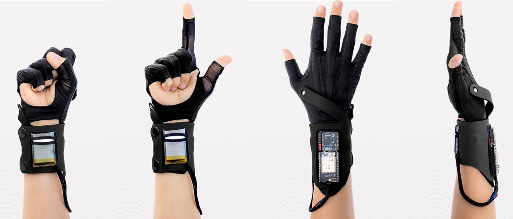
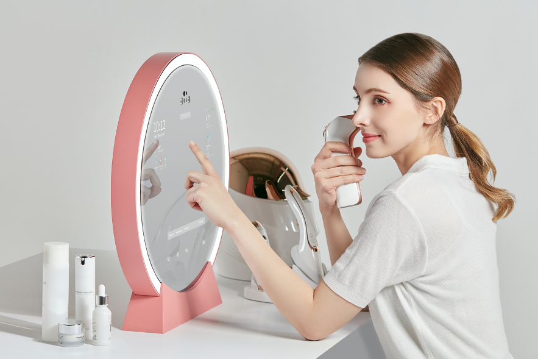
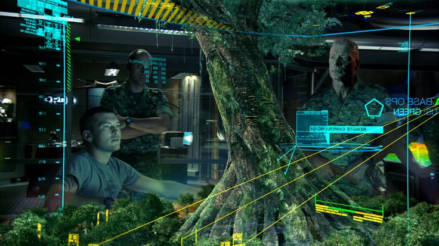
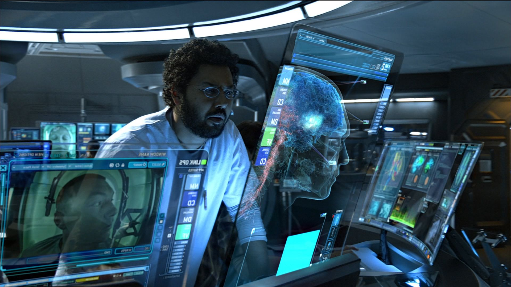
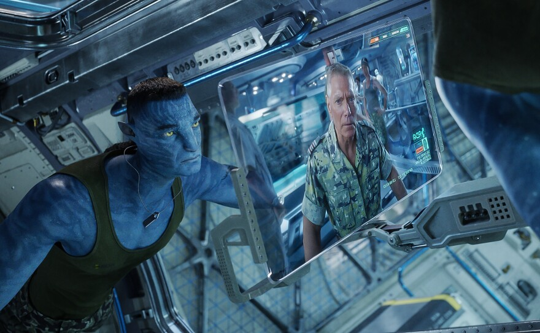
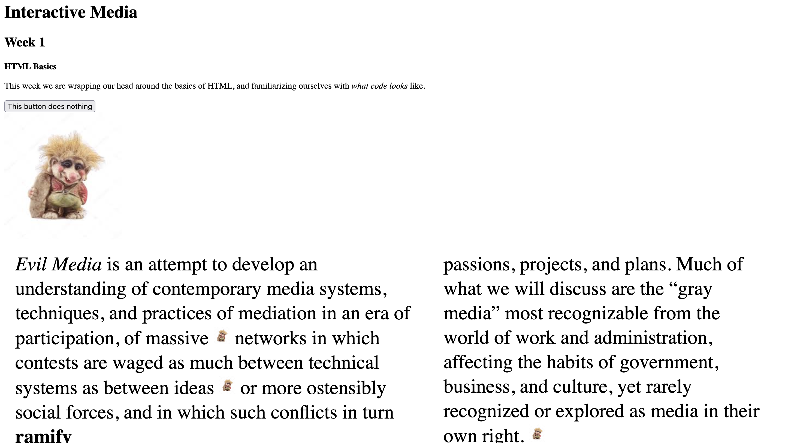

Week 1
Hunt n' Gather #1
Tasked with finding & documenting 3 examples of noteworthy 'interactivity' between human-computer interfaces and the like from reality, I chose...
|
BBC Earth Experience |
Mi.Mu Gloves  |
Lumini by LuluLab  |
|---|---|---|
|
Water World Interactive breakout zone: Immersive art experience |
Originally developed with and for musician Imogen Heap, the mi.mu gloves are a transformational new way to compose and perform music. For musicians, the gloves offer a radical new way to interact with computer music, allowing them to sculpt sound with their hands, or manipulate effects with their fingers. The Mi.Mu Gloves, were first shown at a TEDGlobal conference eight years ago. Imogen Heap not only has an enchanting voice but also the talents of a world-class audio engineer. She's completely engrossed in a technology she's helped to develop, one that makes it possible to alter sounds, create loops and compose tunes all with the wave of her glove-wearing hands. Her performances, with her sound-altering arm and hand gestures, resemble a summoning of spirits, a far more compelling live experience than what Imogen said used to look like she was standing behind her laptop checking email. |
AI skin diagnosis product LUMINI, which can perform the whole process of analyzing skin, making a diagnosis and recommending ideal cosmetics, all in the short space of around 10 seconds. LUMINI is basically made up of three elements: a device (hardware) that acquires the skin data, an AI algorithm (software) that analyzes that data, and a data managing system that visualizes the acquired data onscreen. LUMINI's strength lies in the accuracy of its data collecting, that involves scanning the condition of the skin down to its deeper layers, and its advanced powers of analysis. Its accuracy allows for results equivalent to diagnoses clinical experts perform with the naked eye. Along with this, LUMINI also excels at providing consistent analysis results even under varying environmental factors, such as the light brightness, temperature or humidity in a room. |
WATCH!
|
Screencaps of interfaces featured in the Avatar film show holographic screens that are used for a variety of display and touch purposes for modelling, mapping and analysis. |
||
|---|---|---|
|  |  |  |
Workshop Activity 1: Hello computer in your Face!
GESTURE GLOSSARY:Capture a dictionary of gestures (movements or behaviors) that act as the trigger of human-nonhuman interactivity. |
||
|---|---|---|
| Tapping | Tapping is used for almost all touch interfaces |
|
| Facial Movement | Users can open their mouth or raise their eyebrows to activate certain filters on Snapchat |
|
| Pinching | Zooming in and out of interfaces |
|
| Pressing | Pedestrian crossing buttons |
|
| Shaking | Apple phone users can shake their phone to ‘undo’ actions on their devices (e.g. Notes app) |
|
| Sliding | Adjusting levels of brightness, audio, etc. on touch interfaces |
|
| Swiping | Using index and middle fingers to swipe up/down on screens/touchpads |
|
| Typing | For inputting text into keyboard/interfaces through pressing keys |
SPECULATIVE HCIWhat gestures / behaviors interfaces are "under-exploited"? Imagine & sketch 2-3 speculative interfaces that do not yet exist. What are they for? How do they work? |
||
|---|---|---|
Waving hands down What is this for? Simple hand/arm gestures like waving them down are under-exploited when it comes to technology that is used at home. For example, waving a hand down to close a garage door would be more convenient than taking out a garage door opener device. How does it work? Eye tracking software could be downloaded into the camera of a device to track the user's eye movement; where the user's eyes linger on a certain screen the phone would stop scrolling and if the user looks at a certain icon like the comments, then the comments can open up. |
Eye tracking What is this for? Although eye tracking is currently used in studies, the gestures of the eye could also be utilized to improve accessibility for those with disabilities/impairments, or to just improve the browsing experience for users without having to touch the device. How does it work? Eye tracking software could be downloaded into the camera of a device to track the user's eye movement; where the user's eyes linger on a certain screen the phone would stop scrolling and if the user looks at a certain icon like the comments, then the comments can open up. |
Dancing What is this for? Utilizing the gesture of certain dance cues to activate specific light and sound production in stage productions could enhance the preparation and effectiveness of performances. How does it work? Gesture motion sensors around the stage and the back of the theater would accurately detect the gesture of the performer/s, activating the lighting and audio to match the next movements. |

|

|

|
Workshop Activity 2: Hello World!
Introduction to Web Design
We learnt about the anatomy of the WWW and the associated tags we can use. We also learnt about the Inspector panel that allows visitors of any website to inspect the code and set up in coding tools and environments like Visual Studio Code.
